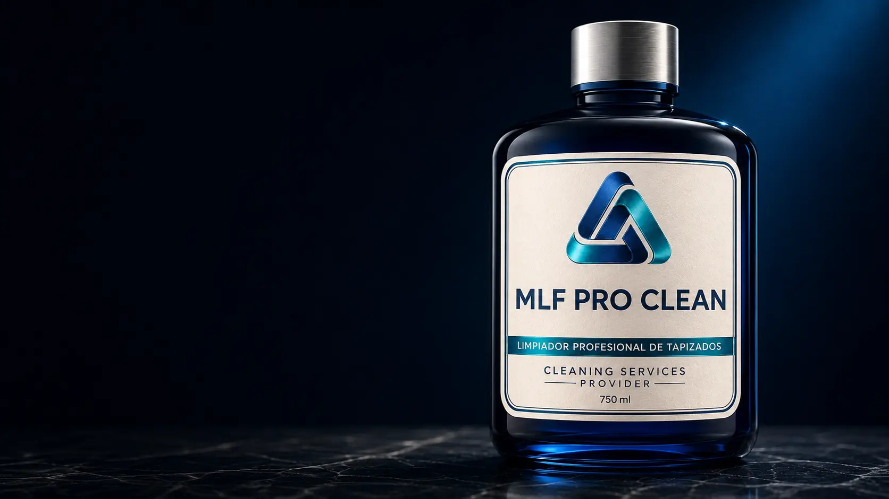

01 · Limpieza profesional de base
MLF Pro Clean
La formulación base de la línea para abordar suciedad general dentro de un proceso profesional controlado. Su aplicación se define según el material, el nivel de suciedad y el método de extracción.